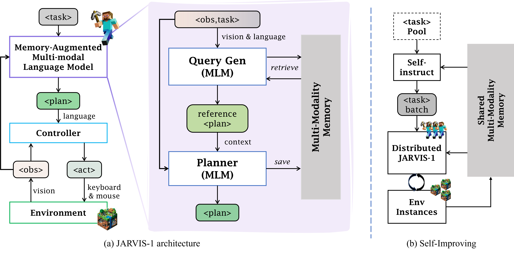
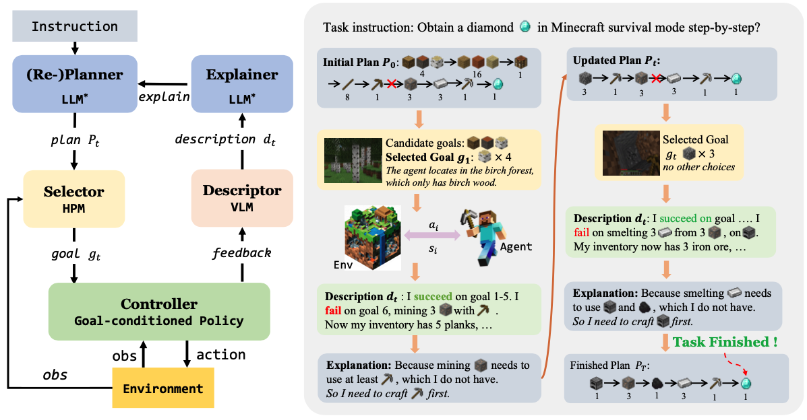

Tokenizer and Model Structure of OmniJARVIS

We present OmniJARVIS, a novel Vision-Language-Action (VLA) model for open-world instructionfollowing agents in open-world Minecraft. Compared to prior works that either emit textual goals to separate controllers or produce the control command directly, OmniJARVIS seeks a different path to ensure both strong reasoning and efficient decision-making capabilities via unified tokenization of multimodal interaction data. First, we introduce a self-supervised approach to learn a behavior encoder that produces discretized tokens for behavior trajectories $\tau$ = {$o_0$, $a_0$, $\dots$} and an imitation learning (IL) policy decoder conditioned on these tokens. These additional behavior tokens will be augmented to the vocabulary of pretrained Multimodal Language Models (MLMs). With this encoder, we then pack long-term multimodal interactions involving task instructions, memories, thoughts, observations, textual responses, behavior trajectories, etc. into unified token sequences and model them with autoregressive transformers. Thanks to the semantically meaningful behavior tokens, the resulting VLA model, OmniJARVIS, can reason (by producing chain-of-thoughts), plan, answer questions, and act (by producing behavior tokens for the IL policy decoder). OmniJARVIS demonstrates excellent performances on a comprehensive collection of atomic, programmatic, and open-ended tasks in open-world Minecraft. Our analysis further unveils the crucial design principles in interaction data formation, unified tokenization, and its scaling potentials.
(b) illustrates a common approach utilizing large vision-language models for planning, subsequently outputting language goals like PaLM-E and DEPS. A language-conditioned policy then translates these language goals into actions at a real-time interaction rate of 20Hz, with high-level models re-planning at less than 1Hz. This hierarchical structure balances interaction frequency and performance, while it requires language as an intermediary and additional language labels. The training process of high-level vision-language models and language-conditioned policies are separate, thus performing poorly on tasks that can not be easily connected by language.
(c) (ours) mirrors the hierarchical structure of (b) but differentiates by employing a self-supervised encoder-decoder policy and FSQ quantization as a behavior tokenizer. The upper-level vision-language models produce self-supervised behavior tokens, which are then conditioned by a policy decoder to output actions, facilitating environment interaction. The behavior tokens are injected into the training corpus of vision-language-action models, which enables end-to-end inference. This approach also eliminates the need for external language supervision and scales efficiently.

Check out some of our related projects below!
|  |
JARVIS-1 is developed on top of pre-trained multimodal language models, which map visual observations and textual instructions to plans. The plans will be ultimately dispatched to the goal-conditioned controllers. We outfit JARVIS-1 with a multimodal memory, which facilitates planning using both pre-trained knowledge and its actual game survival experiences. |

|
This work proposes to follow reference videos as instructions, which offer expressive goal specifications while eliminating the need for expensive text-gameplay annotations, and implements the agent GROOT in a simple yet effective encoder-decoder architecture based on causal transformers. |
|  |
DEPS is an interactive planning approach based on Large Language Models (LLMs) for open-ended multi-task agents. It helps with better error correction from the feedback during the long-haul planning, while also bringing the sense of proximity via goal Selector, a learnable module that ranks parallel sub-goals based on the estimated steps of completion and improves the original plan accordingly. |
@article{wangzihao2024omnijarvis,
author = {Ziaho, Wang and Shaofei, Cai and Zhancun, Mu and Haowei, Lin and Ceyao, Zhang and Xuejie, Liu and Qing, Li and Anji, Liu and Xiaojian, Ma and Yitao, Liang},
title = {OmniJARVIS: Unified Vision-Language-Action Tokenization Enables Open-World Instruction Following Agents},
journal = {arXiv},
year = {2024},
}